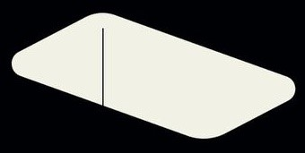

傳說故事裡隱藏的兵法
egg
Aprl 16, 3020
很久很久以前
- 故事是發在 2020 年的地球
- 當年瘟疫肆虐，造成百萬人喪命
- 也產生許多精采絕倫的傳說故事
台灣

隔岸觀火
- 口罩禁止出國，統一管制
- 邊境管制
- 居家隔離、檢疫
- 政府補助製造口罩
指桑罵槐
「如果不是會員國的台灣都告訴 WHO 了，那想問，身為會員國的中國有沒有告知 IHR？如果沒有講，這不是隱瞞，什麼叫做隱瞞？如果有講，WHO 這不是失職，什麼叫失職？」
借刀殺人
- 美國送審彈到屎
- 美國撤資 WHO
- 美國疫情氾濫，彈到屎變為千古罪人
借屍還魂
台灣經歷過 2003 年的 SARS，所以知道你們正在經歷的一切。
台灣被世界衛生組織孤立，所以知道單打獨鬥有多艱難。
誰能孤立台灣？沒有人。
因為我們是來幫忙的。
遠交近攻
- Taiwan can help
- 台灣捐贈口罩支援世界各地的醫療工作者。
- 也與美國跟歐盟合作開發最先進的快篩與疫苗。
反客為主
- 武漢肺炎，正名新冠肺炎，俗稱武漢肺炎
- 彈到屎斥責台灣對他種族歧視
- 要求 CHO 的彈到屎下台
上屋抽梯
- WHO can help 廣告
- WHO 大動作 13 點聲明反擊
- 台灣再列 26 點證據反駁。
WHO 太不智了。
台灣刁民
馬的。
跟你說夠，你不信,拼命買！叫你盡量買時，你偏不買！
結果
台灣可望加入 WHO，但 WHO 破產瓦解！
英國

打草驚蛇
Boris Johnson 宣言：
- 在這一場疫情當中，我們將失去不少親友，大家先要有心理準備。
- 我已經在倫敦的海德公園規畫好可以容納 50 萬人的公墓。死了之後，大家不用擔心沒有地方埋葬。
- 經過英國科學家及醫學權威人士的研究，英國對付武漢病毒的方式將採取群體免疫法。
無中生有
Boris Johnson 的身先士卒：
- 2020/2/27 確診
- 2020/4/5 住院
- 2020/4/6 轉入重症監護病房
- 2020/4/12 離世
精心安排的局
- 英國的國民通通是大膽的刁民
- 民主又民粹主義的刁民
- 林北都已經有死的決心了，那你們民眾們大家就好自為之看著辦吧！
演戲、計謀、假消息、嘴砲、零成本。
終於
西、義、法、德確診破百萬例，英國僅 10 萬例，是歐洲確診最少的國家。
2021/4/12 Johnson 復活
中國

你以為
- 中國只有 8 萬人罹疫
- 武漢醫療崩潰
- 中國沒有解藥
- 疫情始於中國
- 中國會二次爆發疫情
苦肉計
- 中國發動的生化戰
- 讓自己先行感染，利用血淚換取敵人的信任，
- 然後再行反間顛覆敵人
連環計
- 隔離
- 封城
- 方艙、火神山、雷神山醫院
- 二氧化硫
順手牽羊
趁著武漢疫情，收刮全球口罩
笑裡藏刀
韓國撤僑：
200 萬個口罩、10 萬件防護服等醫療物資
趁火打劫
法國：
想要口罩？拿 5G 訂單來換
以逸待勞
美國疾病控制預防中心主任雷德菲爾德在眾議院聽證會上承認，或許有部分新冠肺炎死亡病例被誤診為流感患者，因此未被納入新冠肺炎統計。
混水摸魚
- 武漢肺炎還要 WHO 正名
- 新冠肺炎起源到底是中國還是美國？
金蟬脫殼
- 歐美國家處理自家疫情
- 彈到屎首當其衝，全球疫情的代罪羔羊
中國豈止是中國
- 孫子兵法
- 六韜
- 三十六計
- 毛語錄
所以
中國成功開啟了全球生化戰的戰爭模式。
2000 多萬人罹病，死了 200 多萬人。
終於王子遇見了公主...
中國終於在這次戰役中贏得最大勝利
WHO can help?

Taiwan.
#TaiwanCanHelp #TaiwanIsHelping